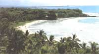

Issue # 123 May/June 1990
DISPATCHES
A plan to tap the volcanic energy of Hawaii's Big Island for domestic use is encountering rough surf.
Hawaii seems perfect for geothermal power-at least to the politicians, planners, engineers and builders who seek to reduce the state's more than 90% dependence on imported oil. As an archipelago of recent volcanic origin, Hawaii has no fossil fuels to bum, but it does have an ever-growing demand for energy. The geotechnological solution to this oil dependency is to exploit the very source of the islands diemselves--the magma from a "hot spot" lying below the earth's surface. By periodically punching through the Pacific Plate as it slowly slides northwest toward Asia, the magma cooled and formed (and is still forming) the Hawaiian chain. The southeasternmost and youngest island of the chain, the Big Island of Hawaii, sits right over this hot spot and boasts active volcanoes through which erupting lava constantly adds to the island's real estate. In the depths of a rift zone leading from Kilauea volcano, magma superheats a deposit of water, which when piped up to die surface and converted into high-pressure steam is capable of driving powerful turbine generators.
Electricity from volcanoes would not only reduce oil dependency and hence the state's vulnerability to outside forces, it would also play a small but positive part in slowing CO 2 buildup from fossil fuels and the accompanying global warning. (Unchecked, this warming could result in the inundation of Hawaii"s famed coastline, where most of its people live.) So an ambitious initiative is now under way to develop a series of geothermal stations on die Big Island to produce some 500 megawatts of electricity, much of which would be exported via an undersea cable to the island of Oahu, where 80% of the state's people live.
The drilling is not difficult by today's standards. Geothermal technology is proven, as power plants in Italy, Iceland, California, New Zealand and other places have shown. Indeed, a test plant on the Big Island built for experimental purposes worked well enough to be successfully hooked into the island's power grid over a period of several years. So, from the perspective of the engineers and the planners sitting in Honolulu offices, geothermal is definitely part of the solution.
The trouble is that the Wao Kele Puna rain forest lies over much of the geothermal zone-the last major lowland tropical rain forest in the United States, say the environmentalists, and the abode of the volcano goddess, Pele, say her Hawaiian worshipers. So, the project is now embroiled in a tropical variant of NIMBY ("not in my backyard"). An energy initiative that looks good from a statewide and global perspective looms as technological evil incarnate to those who see the rain forest as a unique and fragile biological resource, and to those who regard any tampering with the dwelling place of Pele as nothing less than a desecration.
A couple of environmental groups-the Rainforest Action Network and the Pele Defense Fund-have been pressing the anti-geothermal case very aggressively through demonstrations, legal suits taken all the way to the Supreme Court, newspaper ads and the national media. The Rainforest Action Network and its local affiliates marshall a variety of experts to testify how geothermal development will inevitably destroy the rain forest through road building, site development and the inadvertent introduction of exotic noxious gases and fluids. They also raise the specter of ugly high-power transmission lines strung over the island and then laid down in waters frequented by wintering humpback whales, exposing all creatures along the route, human, cetacean or otherwise, to dangerous electromagnetic radiation. In addition, they question the economics of the project, particularly the several billions of dollars to be spent on the undersea cable, which they claim is an unproven technology. Their solution to Hawaii's energy crunch is to reduce consumer demand through a vigorous campaign for energy efficiency, thereby preserving the rain forest, reducing the islands' contribution to global warming and saving the consumer money, to boot.
The Pele Defense Fund is a small but vocal group of Hawaiians, most of them from the Puna district, where the geothermal stations are being built. Puna, argue these advocates, is still a very Hawaiian place in a state otherwise overrun by Americans from the mainland, foreigners and real estate developers eager to cash in on the influx of both tourists and new residents. The Puna Hawaiians, they say, wish to be left in peace to worship their volcano goddess and maintain their rural lifestyle away from development, which in their experience has always meant loss of land and cultural integrity. Why should we, they ask, sacrifice our forest, our Pele, our lifestyle, so that the people on Oahu can have more power to build and air-condition more tourist hotels?
Wounded by these charges, government planners and geothermal engineers cite their own experts, who testify that environmental and social impacts can be controlled and mitigated, and that neither the Puna rain forest nor the power of Pele will be destroyed. Sitting uncomfortably in the middle of the controversy is John Waihee, the first indigenous Hawaiian elected governor of the state. While acknowledging the opposition's case, he has continued to press for geothermal power as a necessary and desirable energy initiative. On the other hand, he must often find himself wishing that magma, rain forest and Pele weren't so closely associated.
Ben Finney is a cultural anthropologist at the University of Hawaii in Honolulu and a contributing editor for Mother Earth News magazine.
|
 |
|
|